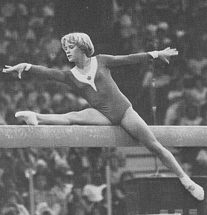

Karen Kelsall (CAN)
1977 American Cup AA
Bronze Medalist

- Karen was born on December 11, 1962.
When she was two, her family moved to Fresno, CA. Karen started taking
ballet lessons at age 3; at age 8 she began taking a recreational gymnastics
class. By the time the family moved back to Canada in 1972, Karen was
a Class II gymnast. She joined the Flicka Gymnastics Club and dreamed
of representing Canada at the 1976 Olympics.
In 1975, Karen placed 18th at a pre-Olympic meet. Disappointed with
her results, but still dreaming about the Olympics, she decided to move away
from her family to train at the National Academy of Artistic Gymnastics in
Eugene, OR. There, she was coached by Dick and Linda Mulvihill.
She made rapid progress, and by 1976 she had made the Canadian Olympic
team. The youngest gymnast at age 13, Karen finished a respectable
27th AA. Today, she's a chiropractor in Portland, OR.
Competition Results
- 1974
Western Canada Championships: 1st AA (jr. division)
1975
- Pan American Games: 13th AA, 5th FX
-
- 1976
- Calgary International: 2nd V, 2nd B, 3rd UB
- Chunichi Cup: 10th AA
- Fiesta Bowl: 4th AA
Jr. CAN Championships: 1st AA
- Olympic Games: 9th Team, 27th AA
-
- 1977
- American Cup: 3rd AA
- Moscow News: 8th AA
- Ontario Cup: 1st AA
Riga International: 15th AA
- Sagebrush Invitational: 1st AA, 1st FX, 3rd V, 3rd UB, 3rd B
-
- 1978
- CAN-BUL Dual Meet: 1st Team, 3rd AA
- CAN Championship: 2nd AA
- Commonwealth Games: 4th AA
- KIPS Invitational: 5th UB
- Pacific Rim Championships: 7th AA
- Shanghai International: 5th UB
- World Championships: 8th Team, 17th AA
- World Cup: 10th AA, 7th FX, 8th UB
-
- 1979
- KIPS Invitational: 3rd UB, 5th B
Oregon Open: 3rd UB, 3rd FX
-
- 1980
- Caesar's Palace Invitational: 6th AA
- CAN Championships: 1st AA
- Capital Cup: 6th AA
- Cottbus International: 9th AA, 6th UB, 7th FX
- KIPS Invitational: 4th AA, 2nd FX, 3rd UB
- 2nd National Elites (USA): 4th AA, 2nd UB, 3rd B
- SUI-CAN-JPN Meet: 1st Team, 2nd AA, 1st V, 1st UB, 1st FX
This page was last updated on July 24, 2021.
© Gymn Forum